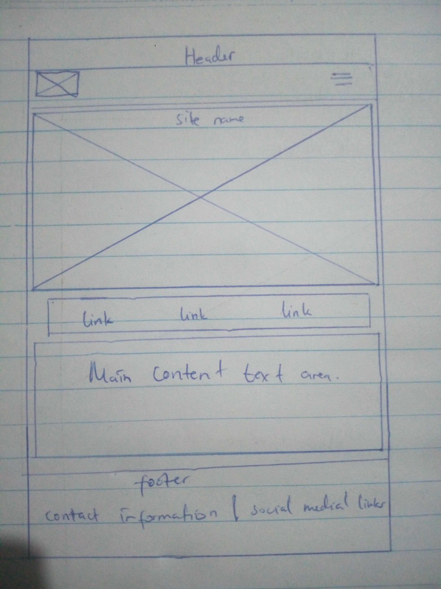
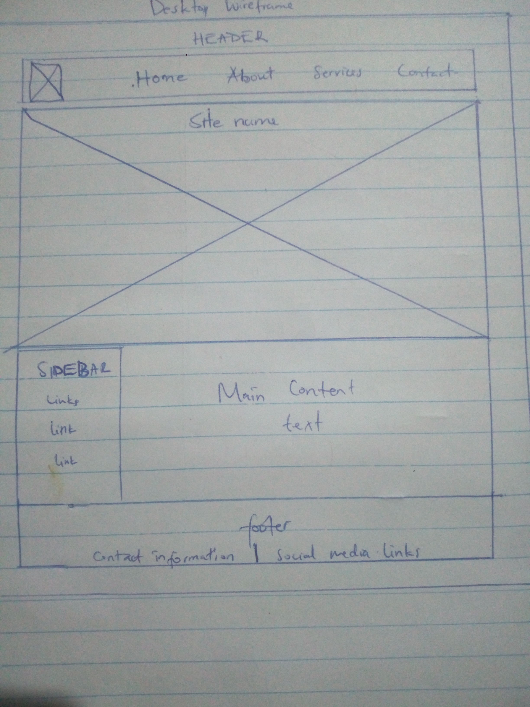

Site Name
Urban Gardening Community
Reason for Selection: This name clearly represents the purpose of the site, which is to create a community hub for urban gardeners. It conveys the focus on gardening within urban settings and emphasizes the community aspect of sharing knowledge and resources.
Site Purpose
The purpose of the Urban Gardening Community website is to provide a comprehensive resource for individuals interested in urban gardening. The site will offer guides, articles, a forum for community interaction, a directory of local resources, success stories, and a photo gallery. The aim is to support and inspire urban gardeners by offering practical advice, fostering a sense of community, and promoting sustainable gardening practices.
Scenarios
- How can I start my own urban garden in a small apartment balcony?
- Where can I find local workshops on hydroponics in my area?
Color Schema
- Green (#4CAF50): This color will be used for headings, buttons, and links to represent growth and nature.
- Brown (#8D6E63): This color will be used for the background and accent elements to evoke the earth and soil, which are fundamental to gardening.
Typography
- Heading Font: Montserrat - This font will be used for all headings to make them stand out and ensure they are easily readable.
- Body Font: Open Sans - This font will be used for the main body text, providing a clean and modern look that is easy to read.
Wireframe
Mobile View

Desktop View
